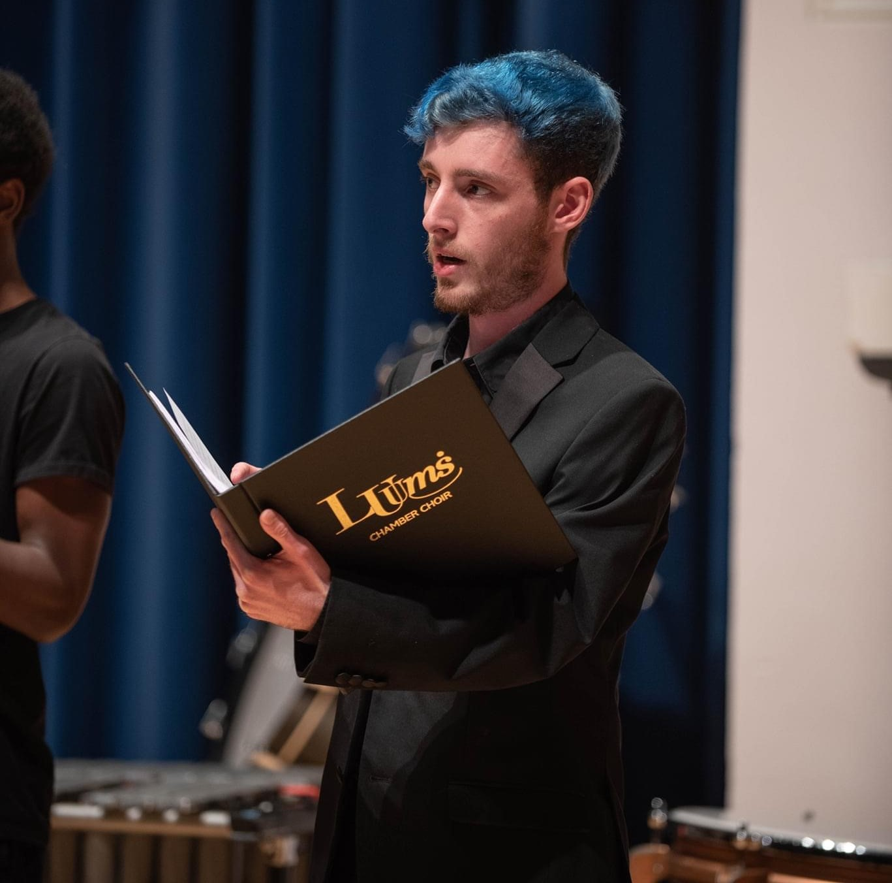

Charlie's experience with classical singing began aged 10 when he joined the Bromley Boy Singers. This was a high standard award-winning choir. For the first few years in this choir, Charlie was a soprano (which is hard to imagine for anyone who is familiar with his voice today). Then at around the age of 13/14 when his voice started to develop, his lower range became very prominent. Not long after, he found a new home within the 2nd basses and since then has always sung on the lowest bass part available.
Despite struggling with the higher notes nowadays, he has a uniquely powerful lower range which has been very useful, especially for university choirs. During his five years at university, he was a member of the Leeds University Union Music Society (LUUMS) Chamber Choir and even a manager in his second year. Because of his range, it was fairly common for the choir to perform music with unusually low bass writing, such as works by Rachmaninoff and Chesnokov.
